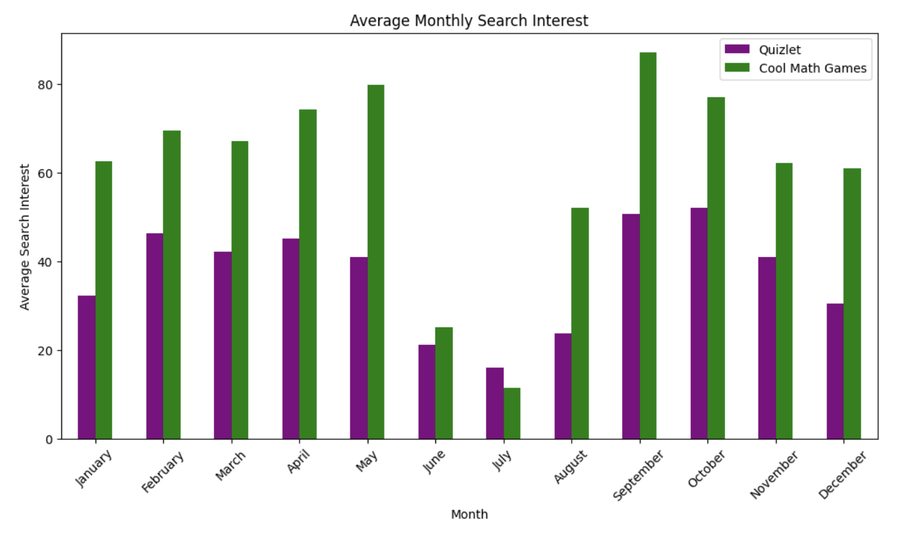
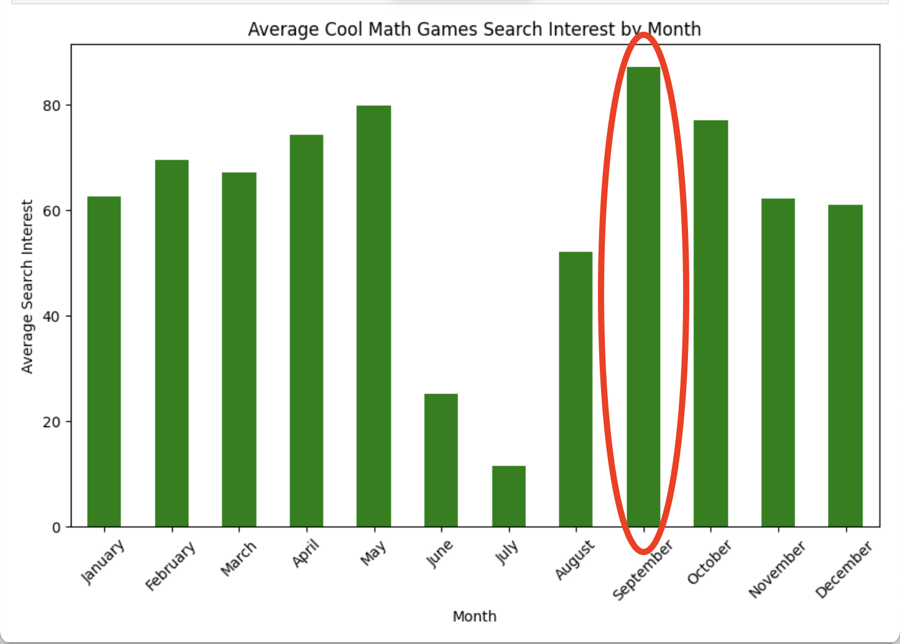
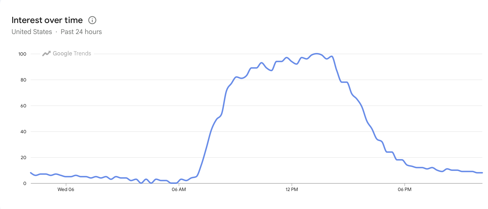

Introduction:

Anyone who grew up in the early 2000s probably remembers Cool Math Games. Fireboy and Watergirl, Papa’s Pizzeria, and Run were the kinds of games kids would play for hours on the computer. Despite its reputation as a fun and entertaining website, Cool Math Games may actually have more in common with Quizlet than expected.
On paper, the two platforms serve completely different purposes. Quizlet is designed to help students study, memorize information, and prepare for exams, while Cool Math Games is built around entertainment and gaming. Shockingly, after analyzing Google Trends data from 2021–2026, both websites showed surprisingly similar patterns in search popularity throughout a year.
General Correlation:
After calculating the correlation, the result was about 0.49, showing a moderate positive relationship between the two platforms. This means that when Quizlet searches increase, Cool Math Games searches often increase as well.
What is causing these websites to follow similar trends?

Both websites showed: sharp drops during the summer, strong increases in September, and higher activity during the school year overall.This suggests that both platforms are heavily tied to the academic calendar, even though they serve very different purposes.**
The most interesting result involved Cool Math Games. I hypothesized that the website would peak near the beginning of the school year because students are easing back into school before workloads become intense with projects and finals…possibly students are even in a bit of denial that their days of games and free time is over. The data supported this idea, with September showing the highest average search interest for Cool Math Games.

Rather than reflecting long-term loyalty to the platform itself, the data suggests students may use Cool Math Games more conditionally. Its popularity appears less tied to the games alone and more connected to the school environment. The Google trends page confirms this theory just by glancing at the search trend over a typical 24 hours. From looking at this graph, it is clear that Cool Math Games search results fluctuate during school hours.
